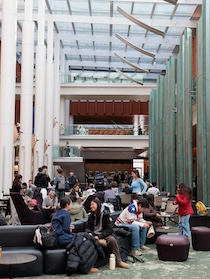

Launch Your Engaged Learning Journey
Transform your academic knowledge into real-world impact.
Use this guide to understand your project context,
evaluate team readiness, identify learning goals,
and prepare for a productive partnership.
Why the Work Starts Before the Project
Engaged learning at UMSI is fundamentally different from
traditional classroom assignments. You are stepping out
of controlled environments and into complex, unscripted
ecosystems where technical solutions intersect with human
lives, organizational cultures, and real community needs.
The initial phase of a project is rarely about jumping
straight into execution. It is about building the
foundation for ethical, sustainable engagement. Taking
time to reflect on your own positionality, audit your
team's collective skills, and learn about your project
context can help prepare you for the work ahead.
Beginning with reflection, preparation, and a willingness
to learn can help your team enter the experience with
greater awareness of the people, organizations, and
communities involved.
Phase 1: Preparing for the Experience
Before creating a solution, take time to understand the
context, evaluate your team's readiness, and identify
what you still need to learn.
Approach the Work as a Collaborative Learner
Before writing code, sketching wireframes, or analyzing
data, consider how your identity and previous experiences
influence the way you understand the project.
Your role is not to enter an organization or community
as an outside expert who will fix a problem. Your role
is to listen, ask questions, contribute your developing
expertise, and work alongside people who understand
their organization and community.

Preparation Goals
-
Develop social and community awareness:
Examine your identity, positionality, assumptions,
and privileges. Learn about the community's history
and consider how power may affect participation
and decision-making.
-
Understand expectations:
Review program requirements, project commitments,
leadership responsibilities, deadlines, and
expected outcomes before beginning the work.
-
Assess team readiness:
Identify each team member's skills, interests,
availability, responsibilities, and learning goals.
Determine where the team may need additional
knowledge or support.
-
Begin project scoping:
Learn about the organization's needs, intended users,
constraints, and desired outcomes before committing
to a solution.
Questions to Consider
-
What do I hope to learn from this experience?
-
Who will be affected by the project and its outcomes?
-
What assumptions am I making about the partner,
community, or project?
-
What knowledge and skills does my team already have?
-
What knowledge or perspectives are missing from
our team?
-
How will the partner participate in project decisions?
-
What would a mutually beneficial outcome look like?
Recommended Preparation Process
-
Reflect on your position:
Identify the experiences, identities, assumptions,
and areas of privilege that may shape your approach.
-
Learn about the context:
Research the organization, community, project history,
affected stakeholders, and broader social conditions.
-
Set learning goals:
Record the technical, professional, interpersonal,
and ethical skills you want to develop.
-
Review team capacity:
Compare the team's skills and availability with
the likely needs of the project.
-
Identify open questions:
Write down what your team needs to learn from the
partner before confirming the project's scope,
methods, or deliverables.
Featured Preparation Resources
Ready to Start Your Project?
Once you have prepared your team, explored the project
context, reflected on your role, and identified your
goals and open questions, continue to the next stage
of your engaged learning experience.
Continue to Starting Your Experience